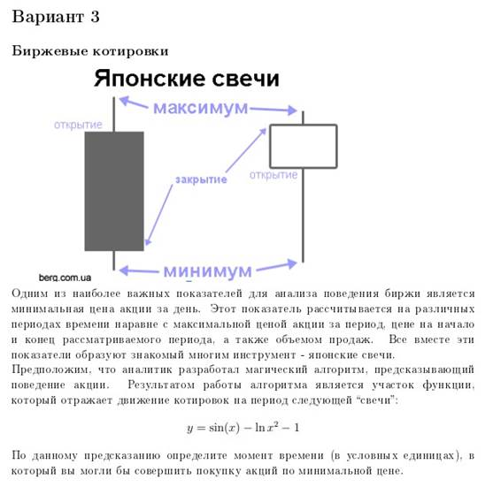
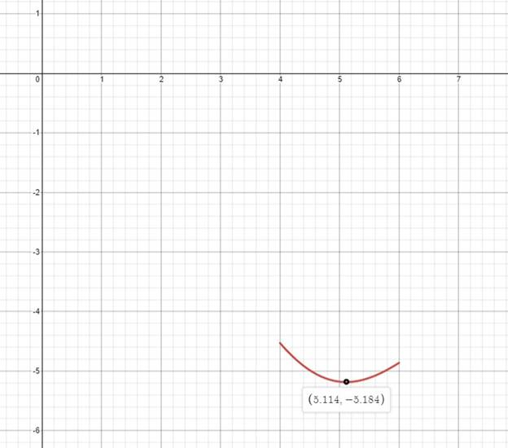
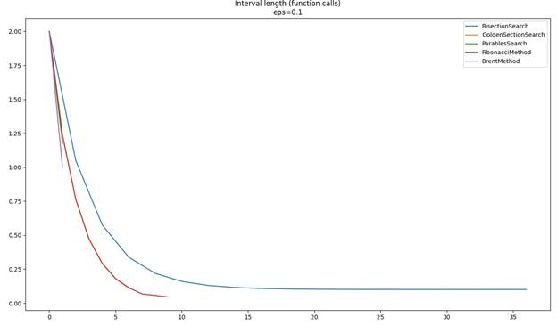
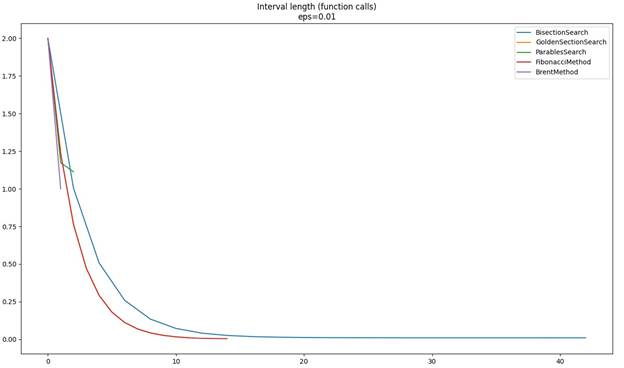
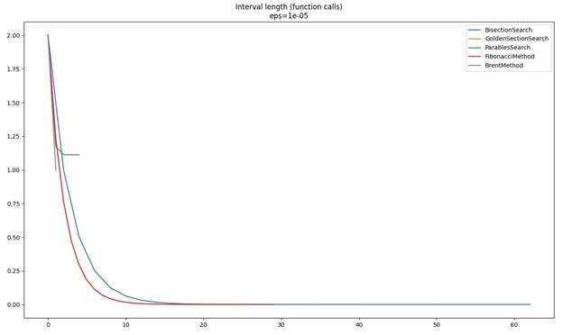
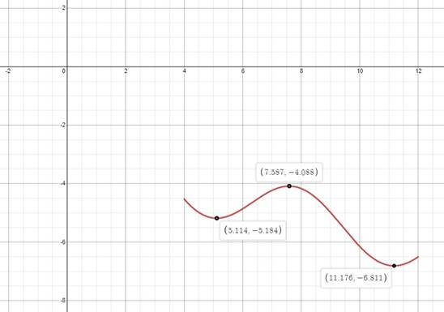
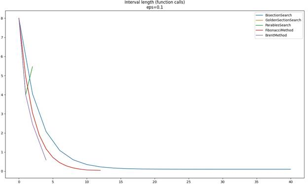
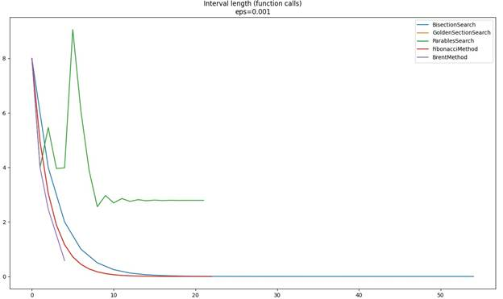

Министерство науки и высшего образования Российской Федерации федеральное государственное автономное образовательное учреждение высшего образования
«НАЦИОНАЛЬНЫЙ ИССЛЕДОВАТЕЛЬСКИЙ УНИВЕРСИТЕТ ИТМО»
Отчет
по лабораторной работе №1 по дисциплине «Прикладная математика»
Авторы: Юрпалов Сергей и Кошкин Михаил
Факультет: ИТиП
Группа: М32051
Санкт-Петербург 2022
Описание:
1. Решить задачу в соответствии с номером варианта. Для решениея реализовать алгоритмы одномерной минимизации функции без производной: метод дихотомии, метод золотого сечения, метод Фиббоначи, метод парабол и комбинированный метод Брента.
2. Сравните методы по количеству итераций и количеству вычислений функции в зависимости от разной точности. Для каждого метода обязательно указывайте, как изменяется отрезок при переходе к следующей итерации.
3. Протестировать реализованные алгоритмы для задач минимизации многомодальных функций, например, на различных полиномах. Могут ли метод золотого сечения/Брента не найти локальный минимум многомодальной функции?
4. По результатам выполнения лабораторной работы необходимо подготовить отчет. Отчет должен содержать описание реализованных вами алгоритмов, ссылку на реализацию, необходимые тесты и таблицы.
5. Для защиты лабораторной работы необходимо знать описание методов на языке математики, пояснять полученные результаты, а также уметь обосновать разумность примененных Вами методов для данных функций.

Ссылка на код: https://github.com/wilfordaf/IS-2020-5_Sem-DevTools-lab1/tree/main/lab-1
Будем рассматривать данную функцию на отрезке [4, 6], где она имеет один экстремум (локальный минимум) в точке (5.114, -5.184):

Для каждого варианта точности рассмотрим график зависимости длинны интервала от количества вызовов функции.
Min value for BisectionSearch is: -5.184396192979808
Min value for GoldenSectionSearch is: -5.184224966932244
Min value for ParablesSearch is: -5.184395744066692
Min value for FibonacciMethod is: -5.184352493209429
Min value for BrentMethod is: -5.177800099531339
 eps = 10^-2
Min value for BisectionSearch is: -5.184396208713247
Min value for GoldenSectionSearch is: -5.184395591669097
Min value for ParablesSearch is: -5.184392764451763
Min value for FibonacciMethod is: -5.184396162191914
Min value for BrentMethod is: -5.177800099531339

Min value for BisectionSearch is: -5.1843962087149125
Min value for GoldenSectionSearch is: -5.184396208713903
Min value for ParablesSearch is: -5.184392652462592
Min value for FibonacciMethod is: -5.18439620871467
Min value for BrentMethod is: -5.177800099531339

Далее рассмотрим данную функцию на участке [4, 12], где имеется 2 локальных минимума:


Min value for BisectionSearch is: -6.81130475142215
Min value for GoldenSectionSearch is: -6.811289267990355
Min value for ParablesSearch is: -4.175729059552472
Min value for FibonacciMethod is: -6.811299935760841 Min value for BrentMethod is: -5.169694836839437

Min value for BisectionSearch is: -6.811304754220976
Min value for GoldenSectionSearch is: -6.811304727692873
Min value for ParablesSearch is: -5.0136231317367566
Min value for FibonacciMethod is: -6.811304753397425
Min value for BrentMethod is: -5.169694836839437
Для точностей вычислений 10^-1, 10^-2, 10^-5 на примере унимодальной функции все методы дали результат с максимальной относительной погрешностью в 0.1%. При этом быстрее всего сходился метод Фибоначчи.
Для многомодальной функции методы Парабол и Брента показали наименее точные результаты (относительная погрешность до 26%). Это связано с плохой сходимостью метода парабол при большой окрестности точки минимума (особенно хорошо это видно на графике при eps = 10^-3). Все остальные методы показали результат с погрешностью не более, чем 0.1%.